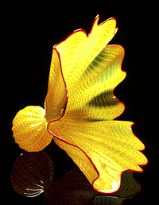

|
Chihuly--A New Masterpiece from America's Glass Master  Dale Chihuly, among the world's preeminent artists working in the medium of glass, and Portland Press collaborate each year to offer a fun-raising opportunity to a select group of museums. This year's offering is a handblown Chihuly Buttercup Yellow Persian with Red Lip Wrap. The Persian, approximately 9 x 13 x 10 inches, will be shipped in its own Plexiglas vitrine. The definitive volume on the series, autographed by the artist, will be sent to edition purchasers later this fall. According to Chihuly, the Persian series started out as "a search for forms. I hired Martin Blank in 1985, just our of R.I.S.D., and I saw right away that he was very talented and creative. He wasn't concerned as much with craftsmanship as he was with experimenting, so I immediately set him and Robbie Miller up in a corner of the hotshop at Pilchuck while the big team...was working on large Macchia. I would make large pencil drawings for Martin and Robbie with a couple of dozen small forms and then I would put an X under the ones I wanted them to go for." From those early densely colored forms, the series expanded to include multipart sets in colors spanning a huge range, including lavender, cobalt blue, leaf green, cadmium red, and yellow. The Persians expanded in size as well (some are more than 3 feet in diamete). The quintessential Persian, like this special edition, is a flowerlike form resting on a ball foot, with gently fluted edges and fine lines that spiral around the body. It will make a beautiful addition to any collection of fine art. Each Buttercup Yellow Persian with Red Lip Wrap is individually blown and so no two are exaclty alike. The price is $2,600 (which includes shipping). |